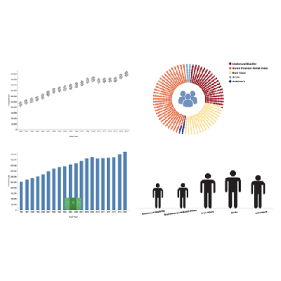
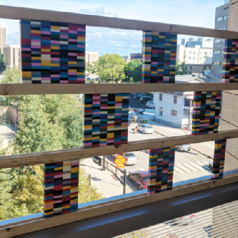

PROGRAM
VisComm Session 1: Visualization for Specific Audiences (9:00am - 10:30am)


Designing Communicative Visualization for People with Intellectual Developmental Disabilities
by Keke Wu, Shea Tanis, and Danielle Albers Szafir
(Paper)

LEGO as Language for Visual Communication by Stuart Flack, Kevin Ponto, Travis Tangen, and Karen Schloss
(Visual Case Study)
Vernacular Visualization Practices by Jaime Snyder
(Poster)
Colors and Imagery in Tailored Infographics for Communicating Health Information to Patients and Research Participants by Adriana Arcia
(Poster)